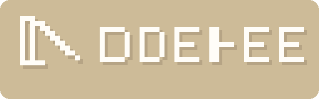

你的产品，陌生人第一次来，
能看懂吗？会用吗？会留下吗？
一个 URL、一句话描述、一个任务目标。越少信息越好——如果 AI 都看不懂，用户更看不懂。
打开页面、看截图、理解内容、点击入口、向下滚动。它看的是屏幕，不是代码，所以更接近真实用户视角。
走了几步？点了什么？在哪里犹豫了？哪里看懂了？哪里放弃了？每条结论都绑定截图和行为证据。
它适合作为发布前的体验预检层，把明显路径问题提前暴露出来。
一个真实的 SaaS 落地页 · 任务：理解产品、找到注册入口、完成首次操作
从 Twitter 看到推荐链接点进来的。习惯先扫首屏，找不到价值主张就关掉。
同一个产品，4 种用户画像，看看他们分别怎么用
用户看到了什么、点了哪里、在哪里停住了，全部有截图证据
首次点击目标、产品理解摘要、滚动发现、冗余步骤、信任信号
首屏清晰度、主入口识别、信息递进、路径效率、信任信号——每项有结论和改进建议
多个用户画像同时跑，生成跨角色对比——谁看懂了、谁迷路了、谁放弃了
一行命令，一份报告。
在发布前把陌生人会遇到的问题先拦住。